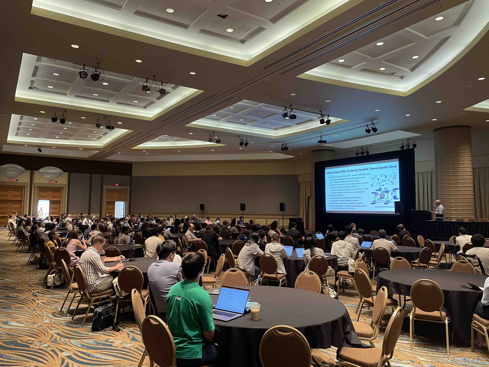
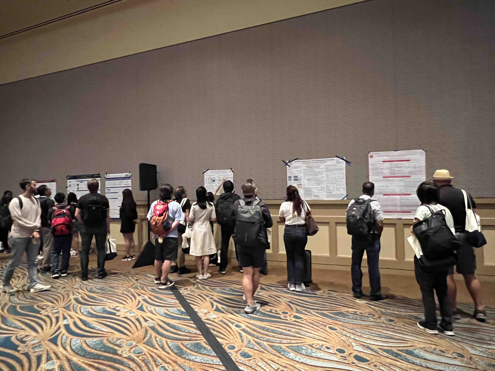

Thanks for attending the workshop. There were 200+ attendees!
Now the slides of keynotes and oral presentations are availble!
 Introduction
Language models are being developed and deployed in many applications, “small”-scale and large-scale, generic and specialized, text-only and multimodal, etc. Meanwhile, the missingness of important knowledge causes limitations and safety challenges. The knowledge includes commonsense, world facts, domain expertise, personalization, and especially the unique patterns that need to be discovered from big data applications. Training and inference processes of the language models can be and should be augmented with the knowledge. The first KnowledgeNLP workshop at AAAI 2023 successfully attracted the attention of scientists and engineers on knowledge augmentation methods towards higher language intelligence. This workshop at KDD 2023 offers a broad platform to share ideas and discuss a variety of topics, such as (1) synergy between knowledge and language model, (2) effective and efficient architectures that integrate NLP and various learning technologies on knowledge graph, time series, and sequences, (3) KnowledgeNLP for e-commerce, education, healthcare, etc., and (4) human factors and social good in KnowledgeNLP.
Important Dates
Paper Submission Deadline |
May 30th, 2023 |
Notification of Acceptance |
June 23rd, 2023 |
Camera-ready deadline |
June 30th, 2023 |
Workshop Date |
August 6th, 2023 (1PM-5PM, Room: Grand A) |